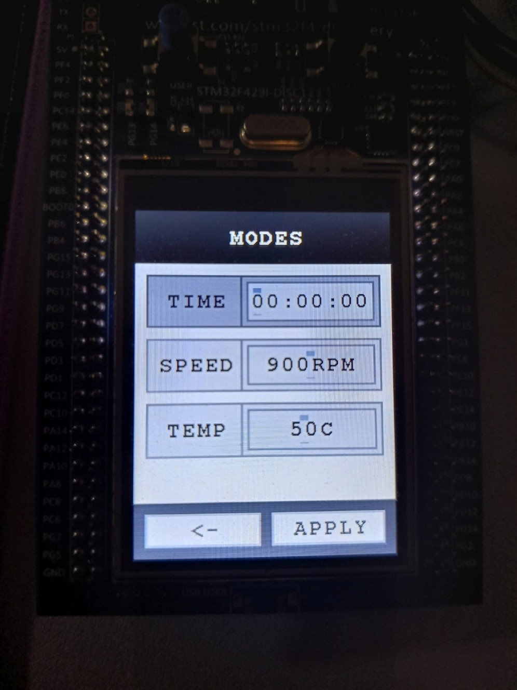
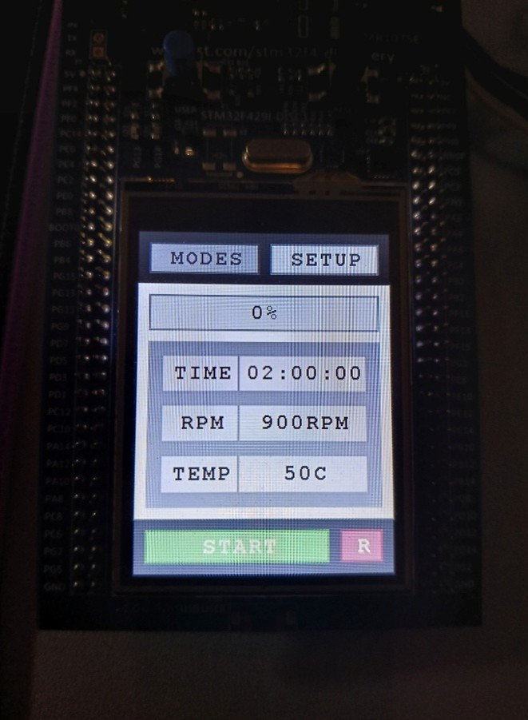
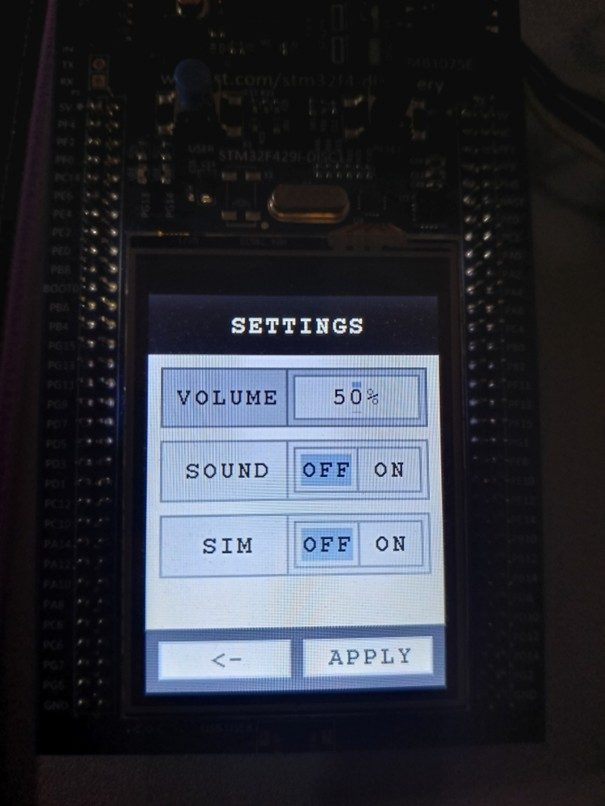
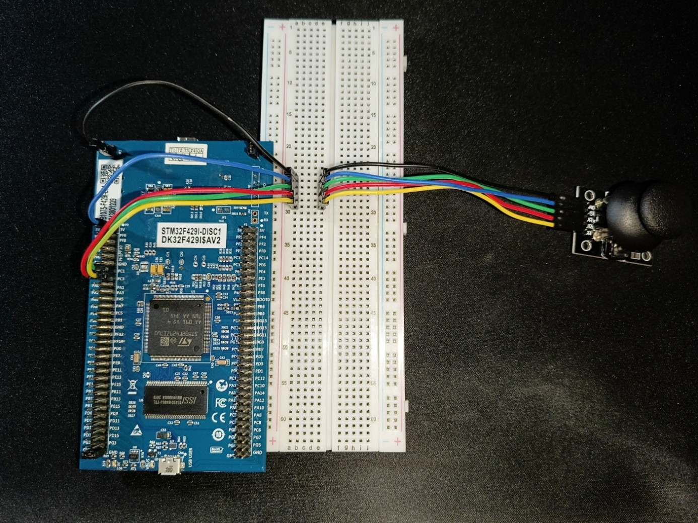
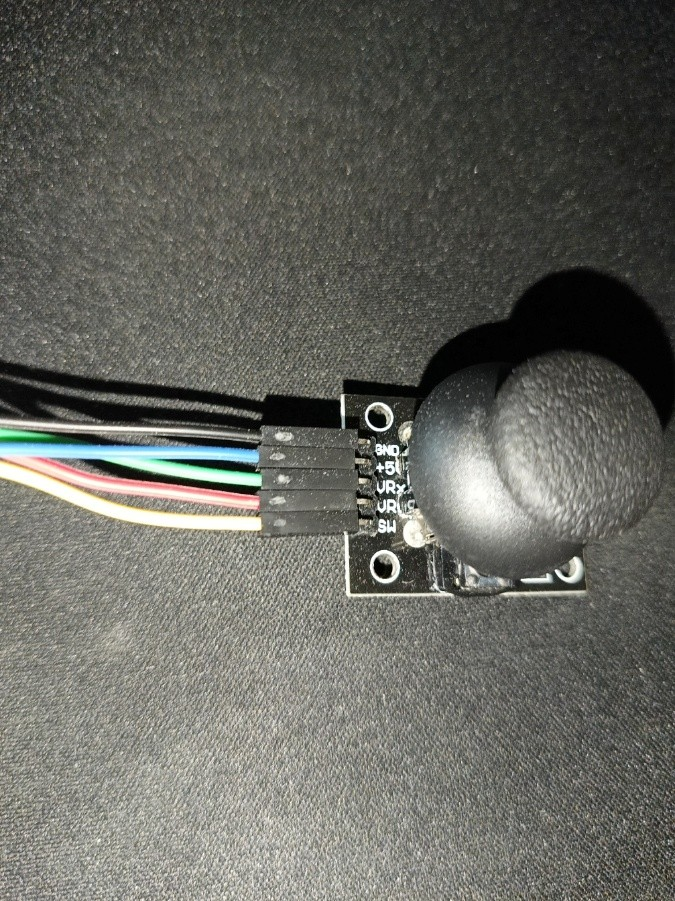

- Generated by
 1.16.1
1.16.1
|
STM32 Embedded GUI Framework
|
STM32 Embedded GUI Framework is a lightweight and modular GUI framework designed for embedded systems based on STM32 microcontrollers.
The project focuses on simplicity, performance, and clean architecture, making it suitable for low-level embedded development without relying on heavy external libraries.
It provides a structured way to build graphical user interfaces, handle rendering, and separate hardware-specific code from higher-level UI logic.
The project is divided into logical layers:
Demonstration of the framework running on the STM32F429I-DISC1 board, using the built-in example (washing machine controller).
Example screens available in the project:
| Modes Screen | Main Screen | Settings Screen |
 |  |  |
This project uses a Thumb Joystick with button v2 (Iduino ST1079) as the primary input device for navigating the UI.
| Connection Overview | Joystick Overview |
 |  |
The joystick connects to the STM32F429I-DISC1 board via a breadboard, which allows for easy prototyping. This setup allows analog reading for X/Y axes and digital read for the button press.
| Joystick Pin | STM32 Pin | Notes |
|---|---|---|
| GND | GND | Ground |
| +5V | +3V | Joystick power supply |
| VRx | PC1 (ADC1_IN11) | X-axis (analog read) |
| VRy | PC2 (ADC1_IN12) | Y-axis (analog read) |
| SW | PC3 | Button press |
This project is not actively maintained, but you are welcome to fork it for personal use or experimentation.
This project is released under the MIT License. See the LICENSE file for full details.
You are free to:
You must:
Including a license in your project is important because it tells others exactly what they can and cannot do with your code, protecting both you and anyone who wants to use it.